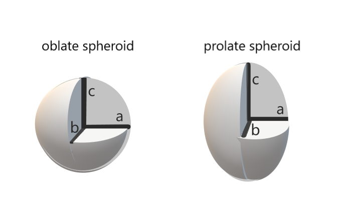

R Data Science: Spatial Data Science I
R for Data Science
November 21, 2024
What is a GIS
- a Geographic Information System is a system for producing, managing, displaying, and analyzing geographic information.
- GIS do not require computers, but are often synonymous with software
- Spatial Data Science is an emergent field which utilizes data science approaches in a GIS, and is a natural extension of a GIS

A Brief History
- 1854 Cholera outbreak in Soho London kills 616 people
- Dr. John Snow used both maps and statistics to identify the source (water pumps) and stop the outbreak.
- foundation of both Epidemiology & GIS.

- Took until the 1990s, when compute power become strongrer, for GIS to flourish.
Earth is not a perfect sphere
- Circumference at equator: 40,075 km (24,901 mi)
- Circumference along meridians: 40,009 km (24,860 mi)
- Certain areas depressed (e.g. Indian Ocean) others raised (e.g. Europe)

Geodetic Datums
- Reference frame established to represent locations within the frame.
- Historically these were locally focused and based on Geoids.
- either horizontal (X & Y) or vertical (Z) features.
- locations are then measured in relation to the control points.
- Components:
- reference ellipsoid or geoid
- origin point (from which measurements run)
- control points very strictly measured from the origin
- reference ellipsoid or geoid


::::
Coordinate Notation - UTM
- Universal Transverse Mercator
- Divides the world into 60 zones
- Flattens each zone
- Measures distances in Meters
Common for field work, planar measurements of meters.

sf 2 - coordinates form a point
- all geometries are composed of points.
- points only require two coordinates, X & Y.
- Y Latitude (necessary), X Longitude (necessary)
- Z Elevation/Depth (uncommon)
- M Time or uncertainty of measurement (uncommon)
- Y Latitude (necessary), X Longitude (necessary)

sf 3 - Points form a sf geometry (sfg’s)
SFG is the spatial topology associated with a feature
POINT - one-dimensional location
LINESTRING - two points connected by a string
POLYGON - Sequence of points connected by strings
-1.png)
sf 4 - combining geometries (sfg’s)
- Two or more points, and sets of linestrings, and polygons can be the geometries of a single feature
- Multi(POINT), multi(LINESTRING), multi(POLYGON)
- GEOMETRYCOLLECTION - A mixed set of geometry types in the same geometry
-1.png)
sp overview of a Spatial*DataFrame

- Data frame is held in a different slot from the geometry and topology
- Data frame columns accessed via object@data[[‘colname’]] indexing
Example Raster 1
The raster currently looks like this, a frame in space with a specified origin, CRS, and cells, but lacking any content (values).
Example Raster 3
The width of each raster cell is: 971.57627 meters
The height of each raster cell is: 965.38983 metersThis example_raster_dec contains: 13924 elementsRaster Stack

The main use of Raster Stacks is to hold layers of similar themes.
- Each layer is the same variable from a different time. e.g. mean temerpature by month (12 layers per stack)
- Each layer is a different independent variable (theme) in an analysis. e.g. yearly mean temperature, mean precipitation, etc.
Raster Brick
- Multiple bands of imagery held in the same file
- The sensors of a camera, e.g. Red, Green, and Blue
- Used for performing image classification to produce data raster layers

plot borders of sf
- Map an sf object using their own geom
geom_sf

fill sf interiors
- Fill the interior of polygons by a variable

colour sf borders I
- Colour the borders of each polygon in an sf object
- But why are you doing this?

colour sf borders II
- Colour the border and remove any fill from the polygon interior

fill interior & remove borders
- Colour the interior of polygons and remove the border
- Can be useful to de-clutter maps

fill interior and colour borders
- fill the interior of polygons and colour the borders

do it all at once
- all of this could also have been done as:

multiple sf data sets on one map
- Use two data sets to create one map

order of data matters
- Be diligent about the order of data sets

build plots from the bottom up
- build plots and maps from the ‘bottom’ up

coord_sf
coord_sfis a helpful modifier to geom_sf- Can set a CRS for the map, modify extent, and change some rendering styles

crop map extent
- clip the extent of a map using the bounding box of the data set of interest
bound <- st_bbox(north_carolina)
# retrieve the bounding box from the sfc list column
ggplot() +
geom_sf(data = us_states) +
geom_sf(data = north_carolina, aes(fill = BIR79)) +
coord_sf( # use the bbox to 'crop' the extent of the map
xlim = c(bound[1], bound[3]),
ylim = c(bound[2], bound[4])
) +
theme_bw()